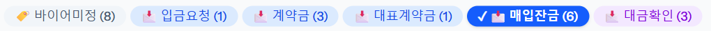
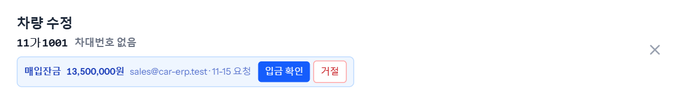
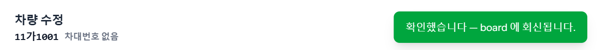
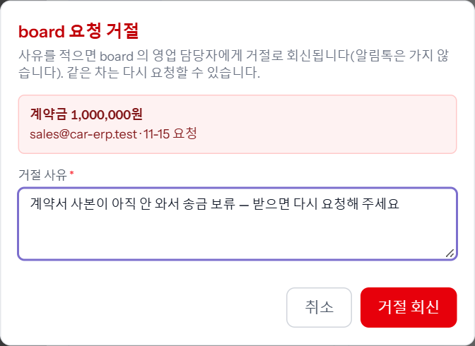

영업이 board 에서 「계약금 보내 주세요」 · 「매입잔금 보내 주세요」를 누르면 ERP 에 요청이 들어옵니다. 재무(또는 관리)가 보고 송금한 뒤 닫거나, 못 보내면 사유를 적어 돌려보냅니다. 요청에 적힌 금액은 보여 주기만 합니다 — 실제 지급은 매입 탭에 직접 넣습니다.
① 요청이 들어오면
1단계
알림톡이 오고, 차량 관리에 「📩」 버튼이 생깁니다
요청이 들어오면 알림톡이 갑니다(누가 받는지는 회사 설정 — 보통 근무시간엔 담당자, 야간·주말·공휴일엔 대표). 차량 관리 필터 줄에는 요청 종류별 버튼이 건수와 함께 뜹니다. 누르면 그 요청이 걸린 차만 보입니다.

- 계약금 · 매입잔금 — 영업이 보낸 송금 요청.
- 대표계약금 — 담당자가 없을 때 영업이 대표에게 바로 보낸 계약금 요청입니다. 같은 차에 일반 계약금 요청이 같이 열려 있을 수 있으니 두 번 보내지 않게 주의합니다.
- 요청이 하나도 없으면 이 버튼들은 보이지 않습니다.
- 관리 계정은 「알림」 화면의 바이어별 묶음에서도 같은 요청을 봅니다.
2단계
차를 열면 맨 위에 요청 카드가 있습니다
요청 종류 · 금액 · 보낸 영업 · 요청한 날이 한 줄로 나옵니다. 영업이 같은 요청을 다시 보내면 「재전송 N회」 표시가 붙습니다.

② 닫기
3단계
송금했으면 매입 탭에 지급을 넣습니다 — 카드는 저절로 사라집니다
- 매입잔금 — 매입 탭 「매입 지급」에 잔금을 넣어 미지급이 0 이 되면 닫힙니다.
- 계약금 · 대표계약금 — 매입 탭에 계약금을 넣으면 닫힙니다.
- 지급 넣는 법은 씬 「매입 지급과 딜러 입금완료 알림」을 보세요.
ERP 밖에서 처리했거나 따로 닫아야 하면 카드의 [입금 확인]을 누릅니다. 「확인했습니다 — board 에 회신됩니다」가 뜨고 카드가 없어지며, board 의 영업 화면에도 처리됨으로 바뀝니다.

4단계
못 보내면 [거절] → 사유 → [거절 회신]
예를 들어 바이어 돈이 아직 안 들어와 잔금을 못 보낼 때입니다. 사유는 board 의 영업 담당자에게 그대로 보입니다. 알림톡은 가지 않습니다. 영업은 같은 차로 다시 요청할 수 있습니다.

알아 둘 것
- [입금 확인] · [거절]은 재무 · 관리 · 업무관리자 이상에게 보입니다. 요청한 영업은 스스로 닫을 수 없습니다.
- 요청 금액을 고쳐 다시 보내면 카드 금액이 바뀌고 알림톡에 「금액 수정」이 붙습니다 — 새 요청이 아니니 두 번 보내지 않습니다.
- 계약금 요청은 잔금까지 다 줘도 저절로 닫히지 않습니다 — 매입 탭에 계약금을 넣거나 [입금 확인]으로 닫습니다.